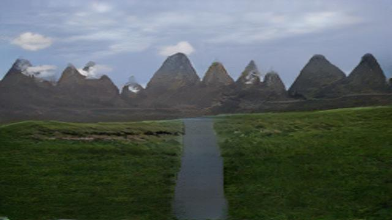
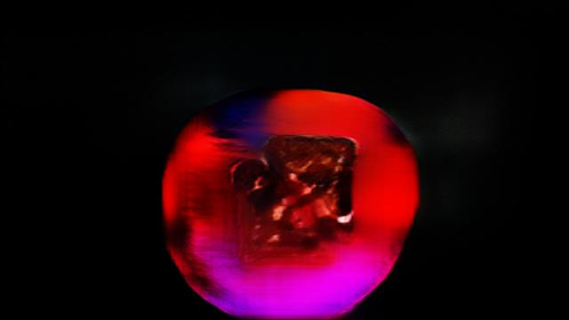
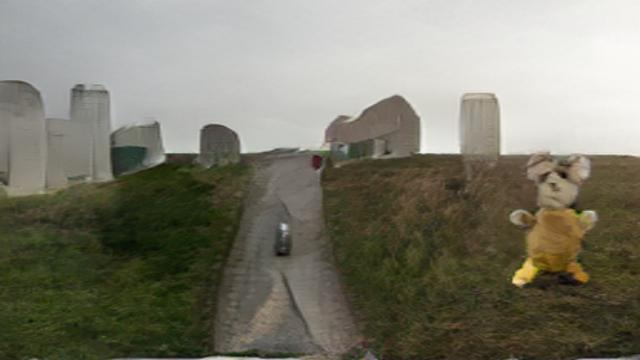
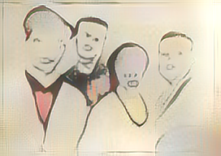
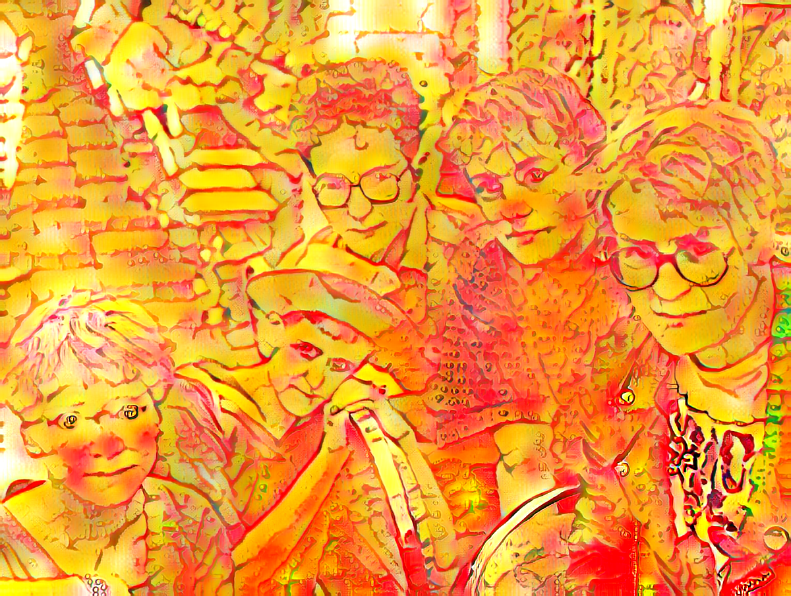
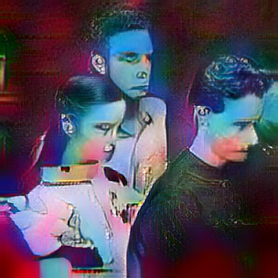

This piece was produced using Spade Coco on Runway ML and depicts mountain scenery, A sandwich on a plate, and road.



This piece was produced using AdaIN Style Transfer on Runway ML. The pictures below are style mashups up of the band members and the style of their cover art..
The Wake

Heavenly

Suburban Lawns